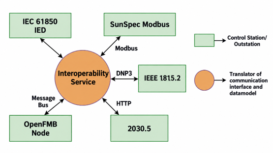
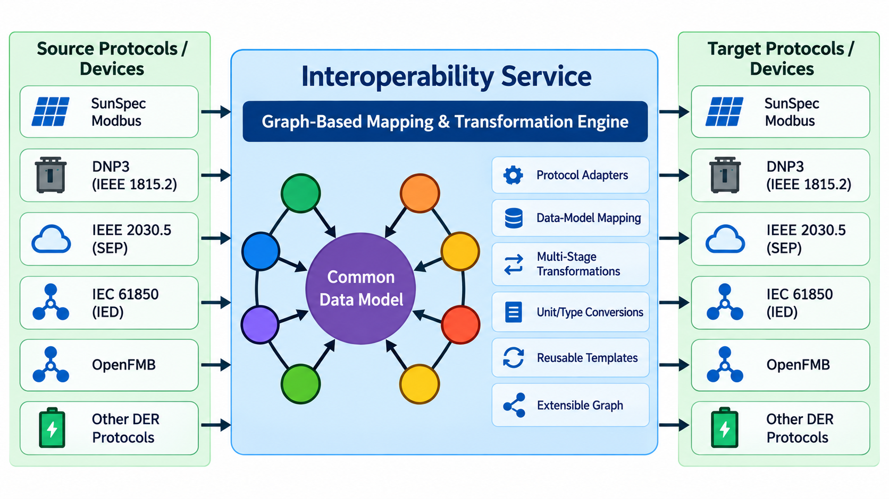

Interoperability Service
Code & Installation Instructions
Replaces the Interoperability Agent
The Interoperability Service supersedes the VOLTTRON Interoperability Agent, which is deprecated. Where the agent held a fixed, one-to-one mapping from IEC 61850-7-420 names to each target protocol, the service maps every resource once through a common model and uses graph-based transformation pipelines to convert between any pair of supported data formats.
The Interoperability Service provides protocol-agnostic communication between control applications and Distributed Energy Resource (DER) devices. It provides templates for standards-based communication and reduces integration complexity:
- Reduces vendor-specific integration effort and deployment risk. Supports interoperability across protocols including SunSpec Modbus, IEEE 1815.2 (DNP3), IEEE 2030.5, IEC 61850-7-420, and OpenFMB.
- Translates communication interfaces and data models to enable seamless device-to-application interaction regardless of the native protocol of each device.
- Enables protocol-agnostic control and reference implementations. Control applications such as the Real-Time Control Agent and Scheduler are decoupled from the underlying communication protocols, ensuring reliable and consistent operation across multiple ESS and DER vendors.
As illustrated in Figure 1, the service acts as a translator of communication interfaces and data models between control stations or outstations that speak different protocols.

Graph- and Transform-Based Interoperability
Rather than maintaining a direct mapping between every pair of protocols, the service maps each protocol-specific data model once onto a common data model, as shown in Figure 2. Mappings between protocol-specific and common data models are expressed as configuration, and transformations between data formats are stored as edges in a directed graph. A conversion from one format to another is found as a path through this graph, so multi-stage transformations are composed automatically from reusable steps. This approach:
- Extends interoperability using graph-based mappings and transformation pipelines.
- Expands mappings between protocol-specific and common data models.
- Enables multi-stage transformations rather than maintaining direct mappings between every protocol pair.
- Supports reusable transformation paths across SunSpec Modbus, IEEE 1815.2 / DNP3, IEEE 2030.5, OpenFMB, and other supported interfaces.
- Reduces protocol-specific custom integration.

Uniquely Addressable Identifiers and the mapping registry
Every resource known to the service, whether a device point, a published topic, or a control endpoint, is identified
by a Uniquely Addressable Identifier (UAI): an ordered tuple of path segments (for example
["site1", "ess1", "active_power"]). UAIs are stored in a tree, so a resource may be looked up either exactly or by
falling back to its nearest defined ancestor. Two kinds of resources may be registered at a UAI:
| Resource type | Fields | Purpose |
|---|---|---|
canonical |
data_format, owner, publication_topic, rpc_topic |
The authoritative definition of a resource: the format its data is expressed in, the component that owns it, the topic on which it is published, and the RPC endpoint used to command it. |
alias |
data_format, owner, references |
An alternate name for another UAI (references), optionally expressed in a different data_format. Aliases may chain; resolution follows them to the canonical resource. |
When a client asks the service to resolve a UAI, optionally requesting a particular target format, the service returns the canonical resource definition together with the chain of transforms needed to convert the canonical data format into the requested one. A client such as the Real-Time Control Agent can therefore subscribe to a device's publication topic and receive its data already converted to the format the client understands.
Transform registry
The transform registry is a directed graph whose nodes are data formats and whose edges are transform definitions.
Registering a transform from format A to format B adds an edge; looking up a conversion from A to C returns the
shortest chain of registered transforms (for example A to B, then B to C). Each transform is a pattern: a
dictionary mapping each output key to an expression that is applied to the input message. Expressions are of the form
transform[input_key](step, step, ...), where the steps are built-in conversions such as multiple(n), add(n),
scale_int(n), scale_decimal_int_signed(n), and cast_value("type"). For example:
{
"input_format": "sunspec_modbus",
"output_format": "common_model",
"pattern": {
"active_power_w": "transform[W](multiple(1))",
"reactive_power_var": "transform[VAr](multiple(1))",
"state_of_charge_pct": "transform[ChaState](multiple(1))"
}
}
Transforms may be supplied in the configuration file or registered at runtime through the RPC interface.
Interface
The service exposes the following interface on the VOLTTRON message bus. Its default VIP identity is
platform.presentation.
| Method / topic | Type | Description |
|---|---|---|
resolve(uai, as_format=None, strict=False) |
RPC | Resolves a UAI to its canonical resource definition. If as_format is given, the response includes target_format and the transform chain from the resource's data format to the target. With strict=False, falls back to the nearest defined ancestor UAI. |
lookup_transform(input_format, output_format) |
RPC | Returns the chain of transform patterns that converts input_format to output_format, or an empty list if no path exists. |
register_transform(input_format, output_format, pattern) |
RPC | Adds a transform edge to the transform registry. |
mapper/update |
PubSub | Publish a list of mapping definitions (same structure as the mappings configuration below) to add resources to the mapping registry at runtime. |
Configuration
The service is configured with a JSON document containing two lists, mappings and transforms:
{
"mappings": [
{
"uai": ["site1", "ess1", "measurements"],
"resource_type": "canonical",
"resource": {
"data_format": "sunspec_modbus",
"owner": "platform.driver",
"publication_topic": "devices/site1/ess1/all",
"rpc_topic": "devices/site1/ess1"
}
},
{
"uai": ["ess", "measurements"],
"resource_type": "alias",
"resource": {
"data_format": "common_model",
"owner": "der.rtcontrol",
"references": ["site1", "ess1", "measurements"]
}
}
],
"transforms": [
{
"input_format": "sunspec_modbus",
"output_format": "common_model",
"pattern": {
"active_power_w": "transform[W](multiple(1))",
"state_of_charge_pct": "transform[ChaState](multiple(1))"
}
}
]
}
In this example, a control agent that resolves the alias ["ess", "measurements"] receives the canonical SunSpec
resource for ess1 along with the transform that converts SunSpec point names into the common model, without needing
to know which protocol the device speaks.
The configuration should be stored in the VOLTTRON configuration store. For a service installed with the VIP identity
platform.presentation, the following command may be used:
vctl config store platform.presentation config path/to/config.json
Integration with Control Applications and OpenFMB
The Interoperability Service is integrated with the Real-Time Control Agent and with OpenFMB. Publish/subscribe messaging provides normalized device data to control applications, which consume the published data structures and issue control commands back through the framework, enabling coordinated actuation of multiple heterogeneous DER/ESS devices. Message bus adapters connect the framework bus to OpenFMB buses over NATS and MQTT, while device drivers provide direct point-to-point communication with controllers and devices. See the OpenFMB page for the integration architecture.
Requirements
- Python >= 3.10
- Modular Eclipse VOLTTRON (
volttron-core>= 2.0)
Installation
Before installing, VOLTTRON should be installed and running and its virtual environment should be active. Information on how to install the VOLTTRON platform can be found here.
Clone the repository and install the service into the running platform:
git clone https://github.com/der-control-modules/interoperability-service
vctl install ./interoperability-service --vip-identity platform.presentation --tag interop --start
vctl config store platform.presentation config path/to/config.json
View the status of the installed service:
vctl status